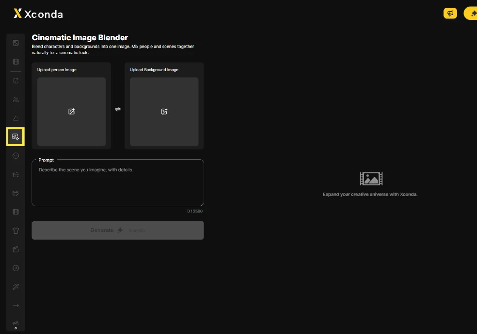
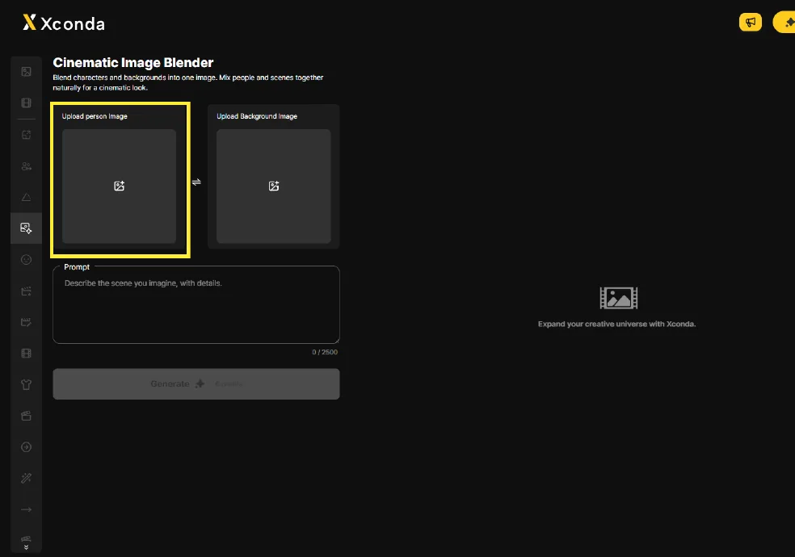
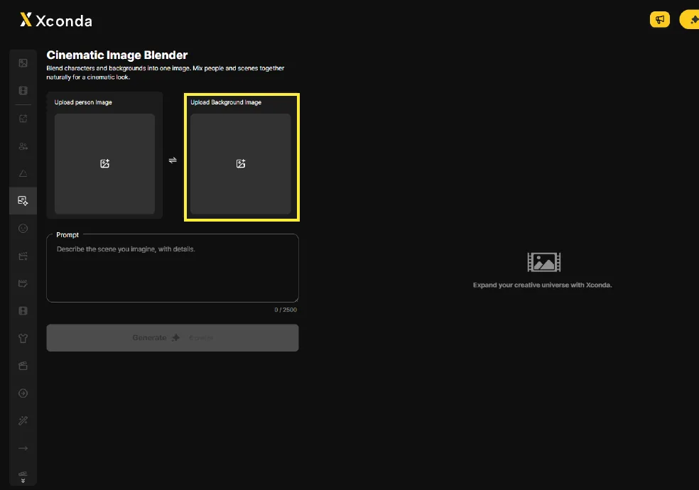
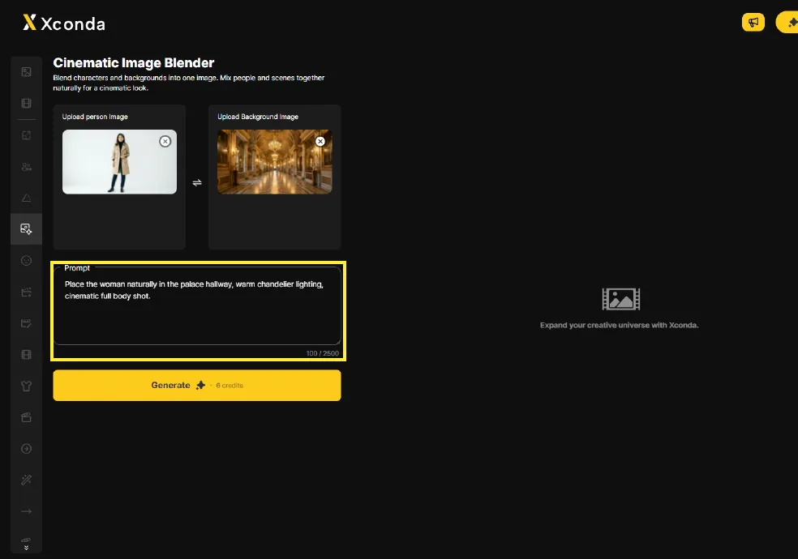
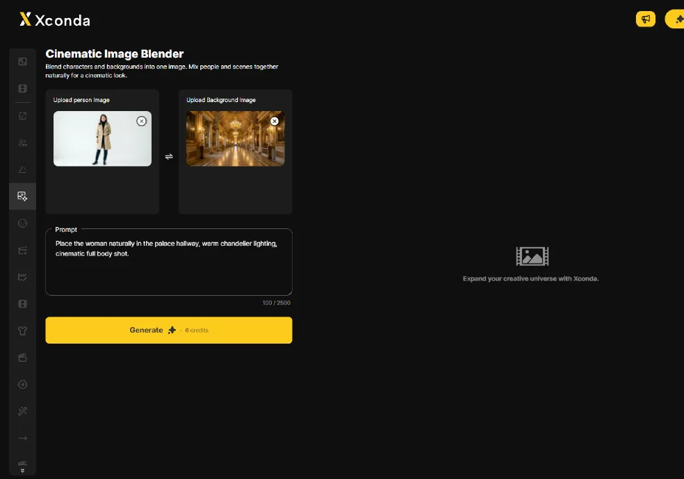
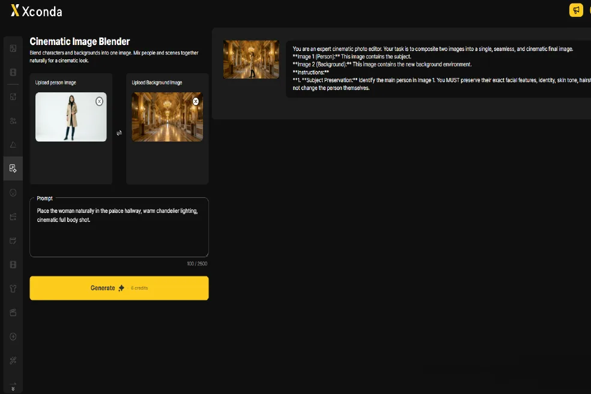
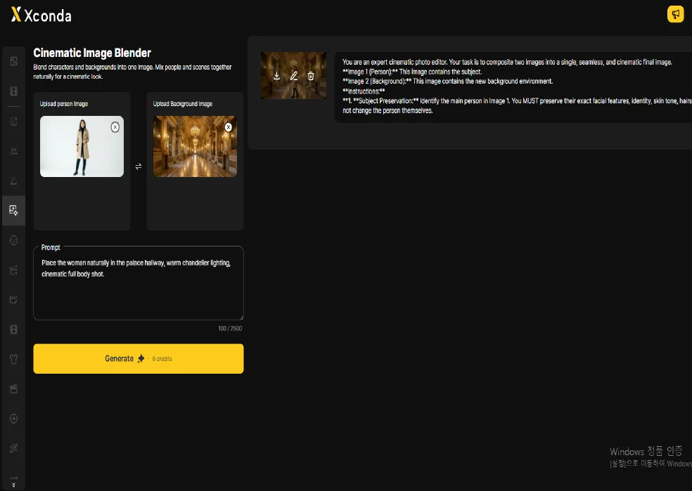
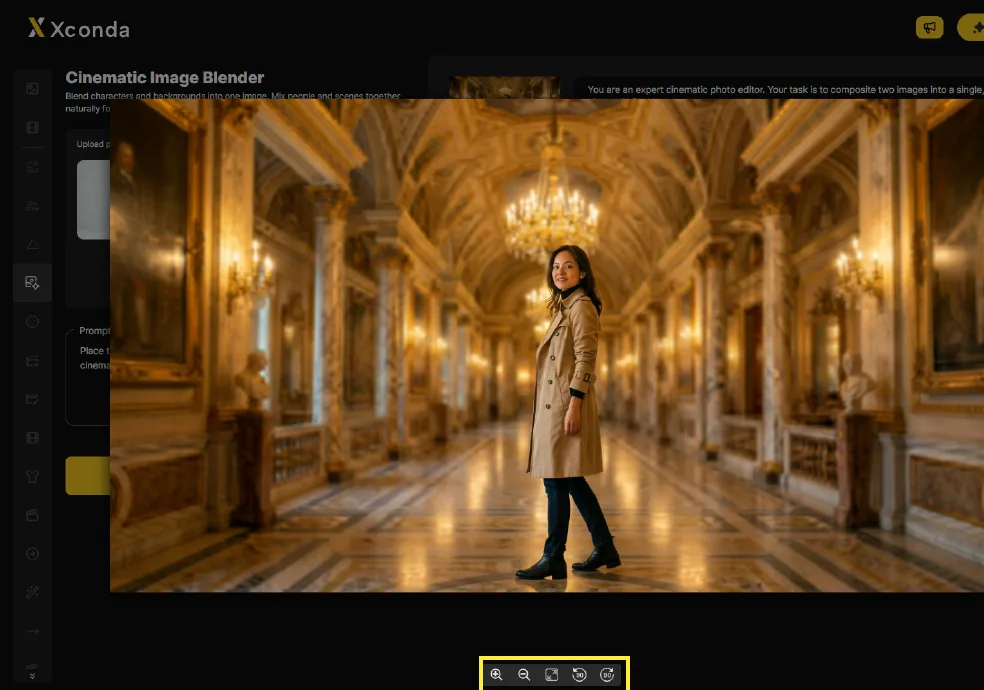

人物写真と背景画像を AI で合成して、映画のようなスチル画像を生成する機能です。
Photoshop などのツールで手作業で合成する場合、ライティングと色調を合わせるのに時間がかかります。
人物画像と背景画像をアップロードするだけで、AI がライティング・色・影を自動で合わせます。人物の顔・肌色・髪型・服装は保たれたまま背景に自然になじみます。
広告画像、コンセプト提案、SNS / マーケティング素材、映像のプリプロダクション。
特定の背景にモデルを配置した広告画像が必要なとき。
本撮影の前にクライアントへビジュアル案を見せたいとき。
さまざまな背景の人物画像を素早く生成したいとき。
絵コンテやムードボード用の合成画像が必要なとき。
人物 + 背景の自動合成、人物の保持、シネマティックなトーン適用。
人物画像と背景画像をアップロードすると、AI がライティング・色・影を自動で合わせて合成します。
元の人物写真に基づいて、顔立ち・肌色・髪型・服装を保持します。
合成結果には、映画的なカラーグレーディングとライティングが自動的に適用されます。
人物の動作、ライティングの雰囲気、映画的なディテールを具体的に描写します。
左側の縦サイドバーの 6 番目のアイコンをクリックします。
左側の縦サイドバーの 6 番目のアイコンを見つけます。アイコンは、きらめきマークが付いた風景画像です。
アイコンをクリックすると、Cinematic Image Blender のワークスペースが開きます。

空のエリアをクリックします。 Upload person Image フィールドで人物画像をアップロードします。
空のエリアをクリックします。 Upload person Image フィールドで人物画像をアップロードします。
アップロード後、人物画像のプレビューが表示されます。

空のエリアをクリックします。 Upload Background Image フィールドで背景画像をアップロードします。
空のエリアをクリックします。 Upload Background Image フィールドで背景画像をアップロードします。
アップロード後、背景画像のプレビューが表示されます。

Prompt 入力フィールドをクリックし、状況・ライティング・カメラの質感をテキストで入力します。
Prompt 入力フィールドをクリックします。状況・ライティング・カメラの質感をテキストで入力してください。
入力フィールドには、プレースホルダー「Describe the scene you imagine, with details.」が表示されます。
文字数は 0 / 2500 の形式で表示されます。

人物画像と背景画像をアップロードし、必要なプロンプトを入力したら、黄色い Generate ボタンをクリックします。
人物画像と背景画像をアップロードし、必要なプロンプトを入力したら、黄色い Generate ボタンをクリックします。
確認ダイアログの OK をクリックすると生成が始まります。

生成が完了すると、合成された画像が右側の結果エリアに表示されます。
結果カードには、生成画像とプロンプトのテキストが一緒に表示されます。
カードの右下に、外部共有アイコン（クリップボードにコピー）、再実行アイコン、削除アイコンが表示されます。

結果画像にカーソルを合わせると、出力を管理できます。
結果画像にカーソルを合わせると、管理アイコンが表示されます。
結果をダウンロードしたり、プロンプトを編集したり、履歴から削除したりできます。

結果画像をクリックすると、詳細表示が開きます。
結果画像をクリックすると詳細表示が開き、画像が拡大表示されます。
下部のアイコンで、拡大・縮小・画面に合わせる・回転を行えます。
